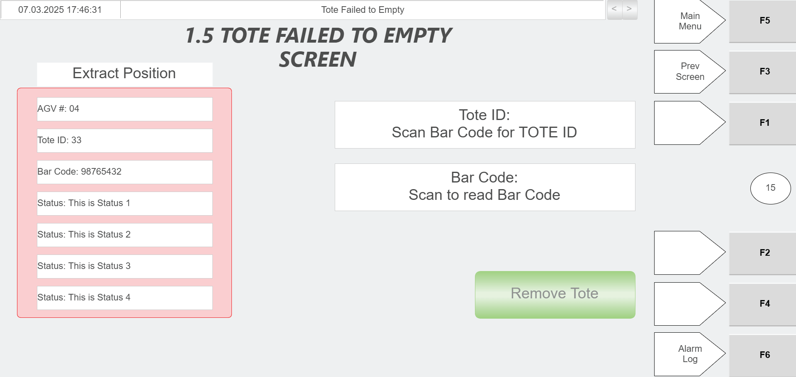
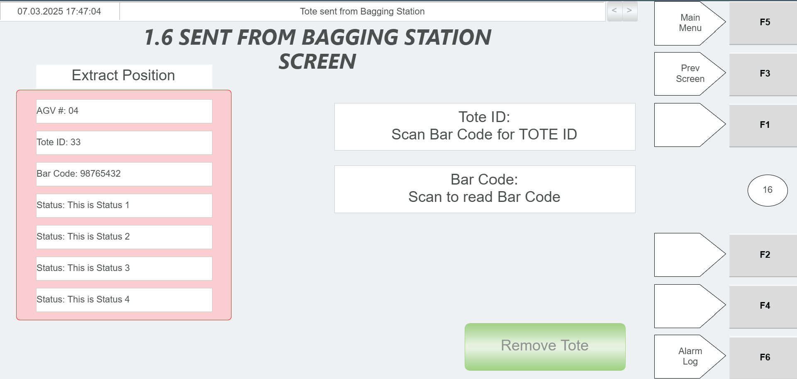

| Procedure ID | proc_verify_tote_barcode_scan_and_tote_id_population_at_the_hospital_station_v1 |
|---|---|
| Title | Verify Tote Barcode Scan and Tote ID Population at the Hospital Station |
| Procedure Type | diagnostic |
| Primary Role | operator |
| Support Safe | Yes |
| Validation Status | needs_sme_review |
| Merge Status | source_finalized |
Use the hospital station HMI and green scanner to verify that scanning a tote barcode causes the Tote ID field to populate automatically on the corresponding hospital station screen.
Use this check when a tote is at the hospital station and the operator needs to confirm that the correct hospital station HMI screen is open, the tote barcode can be scanned with the green scanner, and the Tote ID field populates automatically after the scan. The source indicates the corresponding HMI screen is determined by the status fields.
Responsible role: operator
Instruction:
Open the corresponding screen on the hospital station HMI used to extract the tote from the system. Determine the correct screen using the information in the status fields.
Expected result:
The correct hospital station HMI screen for the tote is displayed.
Screens / Images:

Stop or Escalate If:
Responsible role: operator
Instruction:
Use the green scanner to scan the tote barcode.
Expected result:
The tote barcode is scanned by the green scanner.
Screens / Images:
Stop or Escalate If:
Responsible role: operator
Instruction:
Observe the Tote ID field on the hospital station HMI after scanning the tote barcode.
Expected result:
The Tote ID field updates after the scan.
Screens / Images:



Stop or Escalate If:
Responsible role: operator
Instruction:
Verify that the scanned tote ID automatically populates the Tote ID field on the HMI.
Expected result:
The scanned tote ID appears automatically in the Tote ID field.
Screens / Images:
Stop or Escalate If: